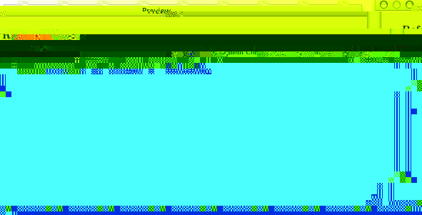

Integrating with TeX
The Cite drawer
Choosing Show/Hide Custom Citation Strings from the Window menu (⌘⇧C) toggles a drawer that allows you to drag and drop citations into a TeX document using custom-defined citation strings, such as fullcite, citet, and citep. Simply dragging from the Reference list (or a copy and paste) inserts just the cite string. Multiple selections in the Reference list produces a single citation containing the highlighted references (i.e., \cite{key1,key2}). The Citation preferences allow for separate citations (i.e., \cite{key1}\cite{key2}).
The Preview panel
The preview panel shows you the currently selected references as a formatted bibliography. The bibliography's format is based on the current style file (set in Preview preferences). This helps in spotting errors and omissions in your references. The preview file will also reflect any macros you have included in your template file, if you have included them in the current bib-item.
System services
In any Services aware app (At least: TeXShop, iTeXMac, TextEdit, but notably not BBEdit for OS X and no Classic or X windows apps) type a string, select it, then choose Complete Citation from the Bibdesk submenu of the Services Menu. This will replace the selected string with the citation(s) of any entries in open BibDesk documents (or, if BibDesk is not open yet, in the default bibliography set in Preferences) whose titles contain that string. So:
becomes:
Note: As of version 0.85, the comment shown above will not appear. only the text \cite{CasObe00} would be inserted.
The service is even more powerful. You can search more than just the title. For example:
- ‘foo’ and ‘Title = foo’ search for ‘foo’ in the title.
- ‘Author = Baz & Title = foo & Month = Jan’ searches for those constraints.
Another service is available, called ‘Complete Cite Key’ which allows you to highlight a part of a citation key and BibDesk will complete the key for you. For instance, in our example , selecting ‘CasO’ and invoking the ‘Complete Cite Key’ service would insert ‘CasObe00’.